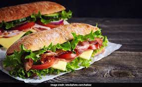

Chicken Sub Recipe

Discription
Chicken sub sandwich is a continental sandwich recipe made with Italian bread stuffed with chicken breast and varieties of fresh vegetables followed by tempting sauces.
Ingridients
- 1 Small lettuce
- 1 small Sliced onion
- 1 small sliced tomato
- 2 Cooked chicken breast
- 1 losf Unsliced Italian bread
- 3 tbsp Sweet chilli sauce
- 3 tbsp Mint mayo sauce
- 1 tbsp Mustard sauce
- 4 slices Cheese
Steps
- Slice the bread into half, keep aside. Tear the lettuce leaves using your hands and keep aside.
- Place the following on one half of the bread according to the given order: cheese slice, lettuce leaves, tomatoes, onion and chicken pieces.
- Drizzle with mustard, mint mayo and sweet chilli sauce. Place the other half of the bread on top.
- The sub sandwich is ready! You can little toast it in the oven if you want a crispy bread layer.
Return to Homepage